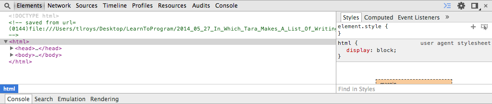

To program is to have power. Let me give you that power.
Let us get started right now. Push the keys ctrl-option-i. At the lower edge of your window you will see this:
The name of this window is Developer Tools
A developer is a person who makes webpages like this one. A tool is a thing you use to help you get done what you are attempting to do. Developer tools are things that make it more simple to make web pages like this one.